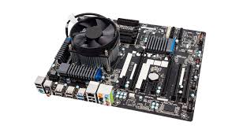

2、Functions of Computers <<
Previous Next >> 4、Software
3、Hardware
原文:A computer system includes hardware, software, and firmware. To build a computer, we must first gather the required hardware. The hardware is the part of the computer that you can touch and feel. When most people see a typical computer, they understand that there are physical components to what they are using, such as the the hard metallic or plastic System unit, central processing unit (CPU), power supply, disk drives, and other essential components. Hardware is limited by its manufacture date and specifically by the motherboard installed. Depending on age and availability, some of the hardware items may be expensive to acquire, repair, or replace. For example, if the computer is running slower over time as you add newer software, it may be necessary to increase the amount of physical memory, called RAM (random access memory), in the computer. In order to do this, the technician would need to purchase the correct size, speed, and style of memory according to the motherboard specifications and install it in the computer which will then enhance its ability to process information more quickly.
Computer hardware consists of the mechanical and electrical parts of the computer. Data flows through the motherboard in what is known as the system bus. External ports, which are discussed in more detail further in this lesson, allow peripheral devices to be connected to the system unit. Common ports are USB, serial, and parallel ports.
Peripheral devices consist of hardware attached to the system unit and are designated as input, output, or both. Traditional input device examples are the mouse and keyboard which are used to input data.

Output devices consist of common items such as monitors, speakers, and printers. All of these devices are ways that the computer can give feedback to the user through either visual or auditory output.
Traditionally singular devices have evolved to become both input and output. Gaming Joysticks which provide feedback to the user through vibrations and of course the touch-screen display now serve as both.
翻譯:計算機系統包括硬件，軟件和固件。要構建計算機，我們必須首先收集所需的硬件。硬件是您可以觸摸和感覺到的計算機的一部分。當大多數人看到一台典型的計算機時，他們就會知道所使用的是物理組件，例如，硬金屬或塑料系統單元，中央處理器（CPU），電源，磁盤驅動器和其他必要組件。硬件受製造日期限制，特別是受安裝的主板限制。根據使用年限和可用性，某些硬件項目的購置，維修或更換可能會很昂貴。例如，如果計算機隨著時間的推移運行速度變慢，而您添加了更新的軟件，則可能有必要增加物理內存量，稱為計算機中的RAM（隨機存取存儲器）。為此，技術人員需要根據主板規格購買正確的大小，速度和內存類型，然後將其安裝在計算機中，這將增強其更快地處理信息的能力。
計算機硬件由計算機的機械和電氣部分組成。數據以所謂的系統總線流經母板。在本課程中將進一步詳細討論的外部端口允許將外圍設備連接到系統單元。通用端口是USB，串行和並行端口。
外圍設備由連接到系統單元的硬件組成，並被指定為輸入，輸出或兩者。傳統的輸入設備示例是用於輸入數據的鼠標和鍵盤。
輸出設備由通用項目組成，例如監視器，揚聲器和打印機。所有這些設備都是計算機可以通過視覺或聽覺輸出向用戶提供反饋的方式。
傳統上，單個設備已演變為輸入和輸出。通過振動向用戶提供反饋的遊戲操縱桿，當然觸摸屏顯示器現在兼用作兩者。
2、Functions of Computers <<
Previous Next >> 4、Software
Copyright © All rights reserved | This template is made with by Colorlib